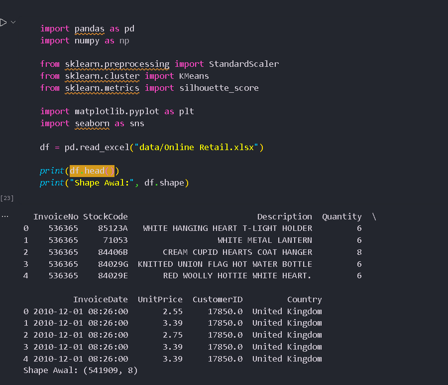
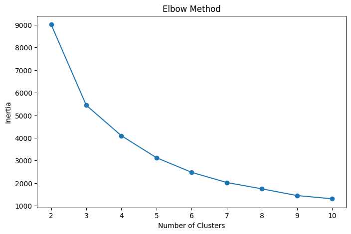
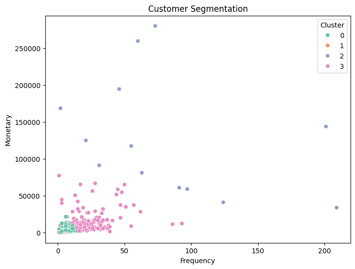

Customer Segmentation — Unsupervised Learning & Marketing Analytics
Memahami perilaku pelanggan secara mendalam di tengah ketatnya persaingan e-commerce
Perusahaan ritel online dituntut memahami perilaku pelanggan secara mendalam agar layanan tepat sasaran dan loyalitas meningkat.
Recency, Frequency, dan Monetary telah lama digunakan sebagai kerangka sederhana namun sangat powerful untuk mengukur keterlibatan pelanggan.
K-Means Clustering digunakan untuk mengelompokkan pelanggan berdasarkan fitur RFM tanpa memerlukan data berlabel.
Hasil segmentasi memberi wawasan untuk pengambilan keputusan strategis pemasaran — dari retensi hingga win-back campaign.
Kerangka analitik database marketing untuk mengukur perilaku pelanggan dari tiga dimensi utama
Jumlah hari sejak transaksi terakhir pelanggan dilakukan.
Pelanggan dengan Recency rendah (baru belanja) lebih besar kemungkinannya melakukan repeat purchase.
Jumlah transaksi unik (invoice) yang dilakukan pelanggan.
Frekuensi tinggi menandakan engagement yang kuat dan loyalitas yang lebih baik terhadap merek.
Total nilai pembelian pelanggan dalam periode analisis.
Nilai monetary tinggi mengidentifikasi pelanggan bernilai tinggi yang berkontribusi besar pada revenue.
Algoritma clustering berbasis minimalisasi jarak, dievaluasi dengan Elbow Method dan Silhouette Score
J = Σᵢ Σⱼ ‖xⱼᵢ − μᵢ‖²
Pilih k centroid secara acak dari ruang data.
Setiap titik data ditugaskan ke cluster dengan centroid terdekat (jarak Euclidean).
Hitung ulang centroid setiap cluster sebagai rata-rata seluruh titik di dalamnya.
Ulangi langkah Assignment & Update hingga tidak ada perubahan, atau iterasi maksimum tercapai.
Teknik heuristik untuk menentukan jumlah cluster optimal (k). Memplot nilai WCSS terhadap berbagai k dan mencari titik “siku” di mana penurunan WCSS mulai melambat signifikan.
Mengukur seberapa mirip suatu objek dengan cluster-nya sendiri (cohesion) dibandingkan cluster lain (separation). Rentang nilai −1 hingga +1.
Sumber: UCI Machine Learning Repository — data transaksi aktual ritel online berbasis United Kingdom
| InvoiceNo | Description | Qty | UnitPrice | Country |
|---|---|---|---|---|
| 536365 | WHITE HANGING HEART T-LIGHT HOLDER | 6 | 2.55 | United Kingdom |
| 536365 | WHITE METAL LANTERN | 6 | 3.39 | United Kingdom |
| 536365 | CREAM CUPID HEARTS COAT HANGER | 8 | 2.75 | United Kingdom |
| 536365 | KNITTED UNION FLAG HOT WATER BOTTLE | 6 | 3.39 | United Kingdom |
| 536365 | RED WOOLLY HOTTIE WHITE HEART | 6 | 3.39 | United Kingdom |

Memastikan kualitas data sebelum dilakukan rekayasa fitur RFM
Baris dengan CustomerID NaN/NULL dihapus karena tidak dapat diatributkan ke segmen pelanggan tertentu.
Nilai Quantity negatif atau nol menandakan transaksi retur atau kesalahan input data.
Harga nol atau negatif merupakan anomali data yang harus disingkirkan dari analisis.
InvoiceNo yang diawali huruf “C” mengindikasikan pembatalan transaksi sehingga dikeluarkan dari data.
Menghitung nilai R, F, M per pelanggan dengan snapshot date 10 Desember 2011, lalu menormalisasi skala fitur
(Snapshot Date − Tgl Transaksi Terakhir) hariJumlah Invoice unik per CustomerIDΣ (Quantity × UnitPrice) per CustomerIDSnapshot date dipilih satu hari setelah transaksi terakhir agar pelanggan paling baru bertransaksi mendapat Recency = 1 (bukan 0).
z = (x − μ) / σDiperlukan karena skala fitur RFM sangat berbeda — Monetary bisa mencapai ratusan ribu sedangkan Frequency hanya puluhan. Tanpa normalisasi, K-Means akan bias terhadap fitur berskala besar.
Elbow Method dijalankan untuk nilai k dari 2 hingga 10, memplot WCSS terhadap jumlah cluster

Evaluasi kualitas cluster menggunakan Silhouette Score dan ringkasan statistik per cluster
| Segment | Recency | Freq. | Monetary | Jml |
|---|---|---|---|---|
| VIP | 43,70 | 3,7 | £1.359 | 3.054 |
| Dormant | 248,08 | 1,6 | £481 | 1.067 |
| Potential | 7,38 | 82,5 | £127.338 | 13 |
| Loyal | 15,50 | 22,3 | £12.709 | 204 |

Karakteristik unik setiap cluster berdasarkan rata-rata Recency, Frequency, dan Monetary
Segmen terbesar (3.054 pelanggan) — aktif berbelanja dalam dua bulan terakhir dengan nilai pembelian wajar. Merepresentasikan basis pelanggan inti yang konsisten dan menjadi aset penting bisnis.
1.067 pelanggan yang sudah sangat lama tidak bertransaksi (Recency tinggi). Frequency & Monetary rendah — berisiko mengalami churn dan butuh program win-back.
Hanya 13 pelanggan, namun sangat aktif dan bernilai fantastis — kemungkinan reseller/distributor besar. Kontribusi revenue sangat signifikan, memerlukan account management khusus.
204 pelanggan yang masih aktif dengan frekuensi & nilai transaksi tinggi — menunjukkan loyalitas substansial terhadap perusahaan.
Strategi spesifik per segmen beserta alokasi anggaran pemasaran yang proporsional
| Segmen | Prioritas | Strategi Utama | Program Konkret |
|---|---|---|---|
| VIP Customer | Tinggi — Pertahankan | Retention & Upselling | Loyalty points, early access produk baru, rekomendasi personal, newsletter eksklusif |
| Dormant Customer | Kritis — Re-engagement | Win-back Campaign | Email “Kami Merindukanmu”, diskon reaktivasi 15–20%, survei kepuasan |
| Potential Customer | Sangat Tinggi — Premium | Key Account Management | Dedicated account manager, bulk pricing, SLA khusus, undangan event eksklusif |
| Loyal Customer | Medium — Investigasi | Value Nurturing & Retention | Analisis pola pembelian, produk komplementer, upgrade membership VIP tier |
Ringkasan temuan penelitian, keterbatasan, dan rekomendasi untuk iterasi berikutnya